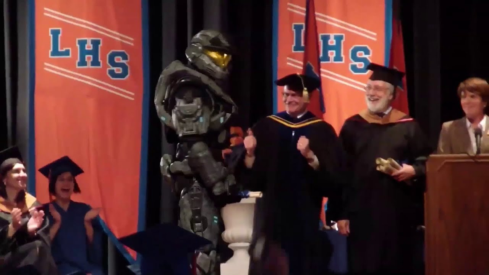
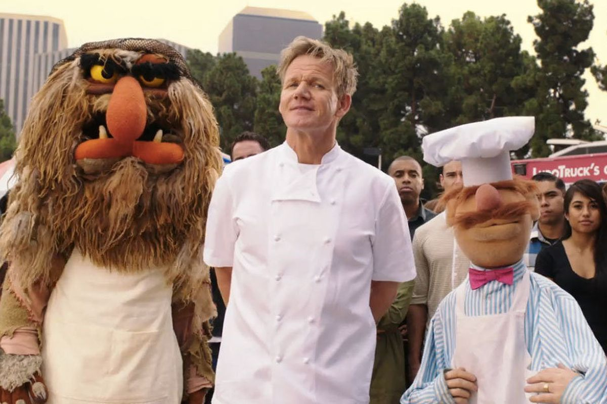
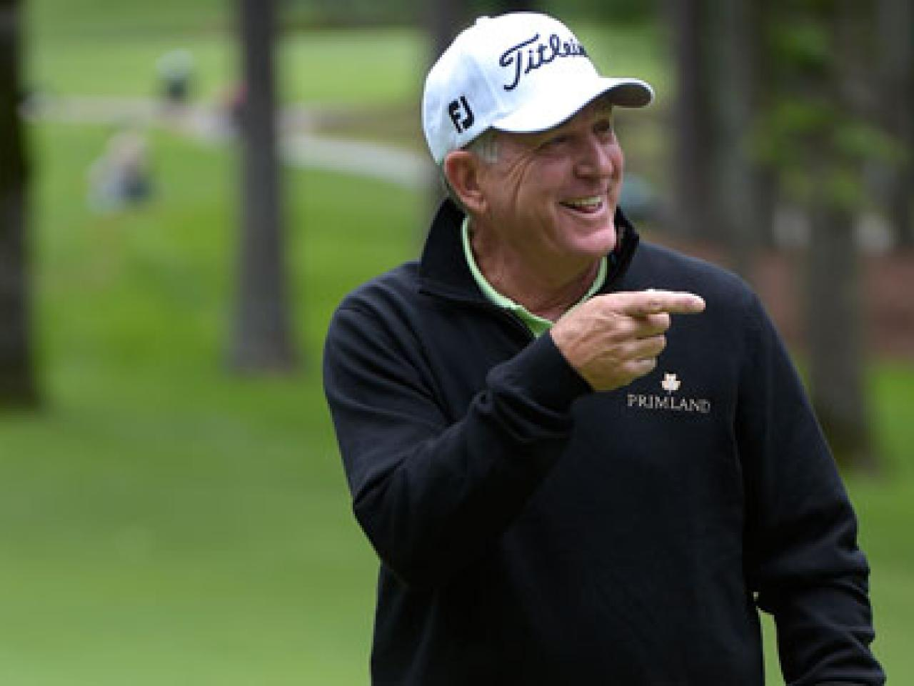

His Knowledge
As an arcane, Zig, was a self-proclaimed "learner". His life goal was to understand as much as possible and to always progress towards his best self. As he laid on his death bed he said "I am the weakest I have ever been, but I have never felt more strong." His decendents explained on record "Zig's life goal was to be his best self as he laid on his death bed, that he did, and that was his greatest success."
Education:
Life-Applied Books:
As an arcane, Zig, was a self-proclaimed "learner". His life goal was to understand as much as possible and to always progress towards his best self. As he laid on his death bed he said "I am the weakest I have ever been, but I have never felt more strong." His decendents explained on record "Zig's life goal was to be his best self as he laid on his death bed, that he did, and that was his greatest success."
Education:
- Brigham Young University (Undergraduate)
- Litchfield High School
- Kaysville Junior High
- ImperialHal's Apex Crash Course Summa Cum Laude (course now valued over $300)
- Morgan Elementary Valedictorian

Zig at Litchfield High School accepting his high school diploma
Life-Applied Books:
- Rich Dad Poor Dad, Robert Kiyosaki
- 7 Habits of Highly Effective People, Stephen R Covey
- Relentless, Tim Grover
- Book of Mormon, Mormon?
- The Power of Your Subconscious Mind, Joseph Murphy
- The Go-Giver, Bob Burg & John David Mann
- The Fearless Mind, Craig Manning
His Skills
Zig strived to perfect his craft in everything he did. He always said "Skill is not natural talent, skill is the developing the talent of failing, trying again, failing, and trying again and again until you succeed. That is real skill."
Zig strived to perfect his craft in everything he did. He always said "Skill is not natural talent, skill is the developing the talent of failing, trying again, failing, and trying again and again until you succeed. That is real skill."
- Cooking:
- Park City Cullinary Institute Alumni
- Famous Recipe "Midnight in Italy"
- New meal a week for over 60 years
- Profficient in both American Cuisine and International Cuisine
- Proficient Sports:
- Tennis
- Golf
- Baseball
- Golf
- Basketball
- Professional Skills
- Accounting
- Sales
- Consulting
- Executive Relations
- Writing

Three of Zig's top cullinary students
His Passions
Zig's greatest quality was his passion! Each day of his life Zig created something better for himself and the future. His passion for people, positivity, and development was radiating and long lasting.
- His life principle's for people:
- Seek first to understand before you seek to be udnerstood
- Love is the governing law of universe, live by it
- Everyone deserves to feel needed, heard, and believed in
- Give generously.
- Learn to receive. The cylce can't continue if you refuse to receive.
- His life's principles for positivity:
- You are your own life's creator
- Proactivity always beats reactivity
- You are your greatest asset
- Be grateful
- If you beleive in yourself, you will never be stopped
- Know your worth. Know you are bound to succeed
-
His life's principles for Development:
- Never be satisified
- Always reflect on gratitude
- Best way to grow is by helping others to grow
- If you do always do better today than yesterday, you will always be growing
